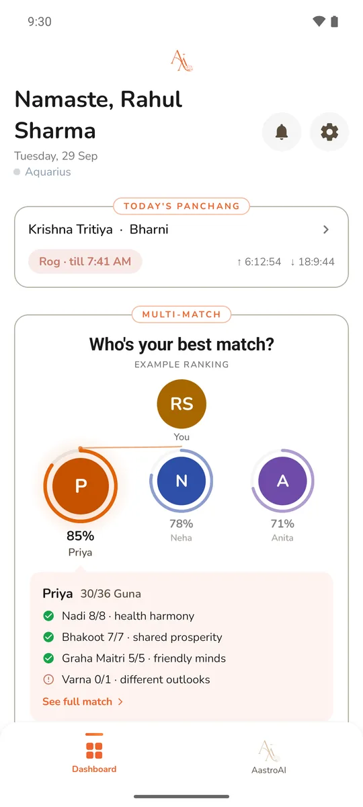

AstroAshva
One who
believes
Get the app
Free to install, first Kundali free. Some features use credits: see pricing.

What AstroAshva does
- Kundali. Your Kundali, computed from your birth details: Lagna, Moon sign, nakshatra and the running dasha, with the full chart in North or South Indian style.
- Kundali Milan. Ashtakoot guna milan for two saved Kundalis, all 36 gunas koota by koota, with Manglik and Nadi checks.
- Multi-Match Engine™. Rank several saved Kundalis against yours for love, friendship and marriage, with the reasons shown.
- AshvaAI chat. Ask about your own chart in English or Hindi. Answers are read from your computed Kundali, not a generic sign.
- Face reading. A traditional Samudrika reading from one clear photo, read with your Kundali. For reflection and entertainment.
- Palm reading. Heart, head, life and fate lines from a photo of your palm, read alongside your chart. For reflection and entertainment.
- Horoscope and Prediction Engine™. Daily, weekly and monthly horoscope for your Moon sign, plus transit-timed reads.
- Panchang. Tithi, vaar, nakshatra, yoga and karana, with sunrise, sunset, moonrise and Rahu Kaal for your location.
- Notification Engine™. Alerts timed to your exact transits.
Questions
- What is AstroAshva?
- A personalised Vedic astrology app for Android (and an iPhone beta), offered for guidance and entertainment: Kundali, numerology and Lo Shu grid, kundali matching, daily panchang and horoscope, transit-timed notifications, and AshvaAI, an astrologer chat in English and Hindi.
- Is AstroAshva free?
- Free to install, and your first Kundali is free. Some features use credits: a new Kundali 10, an AI chat reply 5, a palm or face reading 10. New accounts get 500 welcome credits; packs of 100, 500 or 1,000 credits cost ₹100, ₹500 or ₹1,000. See pricing.
- Which languages does it support?
- English and Hindi, including the AI astrologer chat and reports.
- How do I download AstroAshva?
- On Android, get it on Google Play. The iPhone beta is on Apple TestFlight.
- Does AstroAshva support kundali matching?
- Yes: Ashtakoot (guna milan) matching between two birth charts, and a Multi-Match engine that ranks your best possible matches.
Start today
Free on Google Play for Android. The iPhone beta is on Apple TestFlight.
For guidance and entertainment.